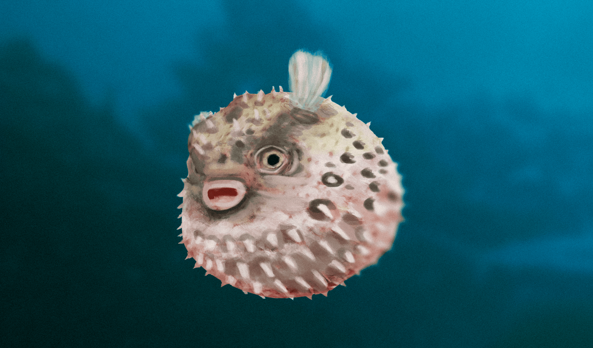

post 1
Baiacu, baiagu, sapo-do-mar, peixe-balão ou lola são as designações populares para diversos peixes da ordem dos Tetraodontiformes, comuns na fauna fluvial da América do Sul e, mais especificamente, do Brasil.
Baiacu, baiagu, sapo-do-mar, peixe-balão ou lola são as designações populares para diversos peixes da ordem dos Tetraodontiformes, comuns na fauna fluvial da América do Sul e, mais especificamente, do Brasil.